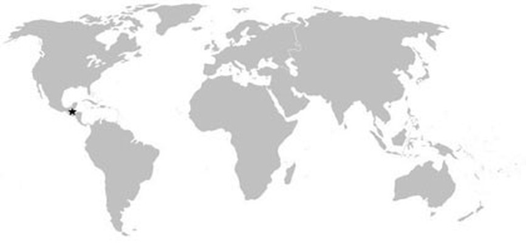

WEB
구글 웹 서버(Google Web Server, GWS)는 구글이 자사의 웹 서비스에 사용하고있는 웹 서버 소프트웨어의 이름이다. 2017년 10월 기준으로 실질적으로 작동하는 웹 사이트(active site)들에서 쓰이는 웹 서버 소프트웨어 순위는 아파치(44.89%), 엔진엑스(20.65%), 구글 웹 서버(7.86%), 마이크로소프트 IIS(7.32%)순이다.[1] 이 조사에서 생성은 되어있으나 정상적으로 작동하지 않는 웹 사이트들은 배제되었으며[2] 특히 MS의 인터넷 정보 서비스(IIS)를 설치한 웹 사이트들의 상당수가 비활성 사이트였다. 그런 사이트들도 포함하면 MS IIS가 1위이다. 구글은 구글 웹 서버가 맞춤형 리눅스 서버에 설치되어 작동하고있는 것을 제외하고는 의도적으로 그 자세한 내용은 밝히지 않았다.[3] 구글은 내부에서 사용하기 위해 오픈 소스 소프트웨어에 직접 손보는 경향이 있기 때문에 구글 웹 서버도 아파치 HTTP 서버 소스 코드를 직접 수정한 것이라는 추측이 있다.